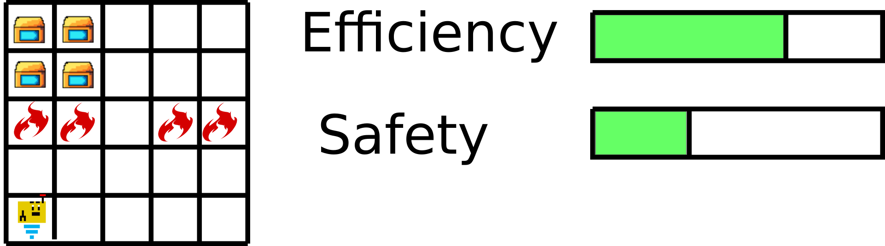
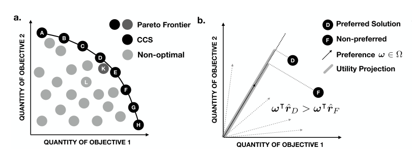
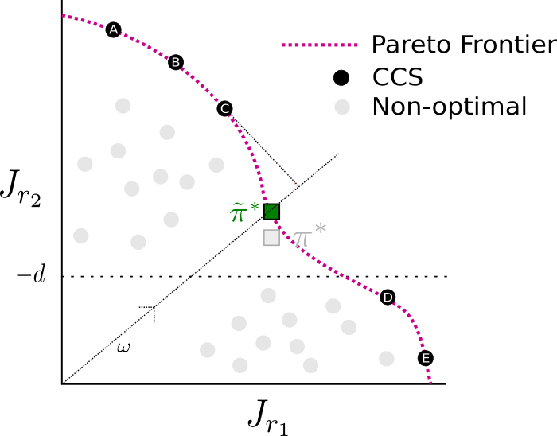

Constrained versus Multi-Objective Reinforcement Learning. A Fundamental Difference?

Introduction
If you have ever taken a class in mathematical optimization, you are probably familiar with the notion of a constrained optimization problem. If not, then don’t worry, because the idea is really simple. I give you a function $f(x)$ which maps a quantity $x$ to a real number, and I want to find an $x$, such that $f(x)$ is maximal. For example, let’s say that $f(x)$ is a magic function that miraculously measures my knowledge about reinforcement learning research in terms of how many arXiv papers I read per day. Assuming that reading more papers does actually increase my knowledge (which, given the amount of papers on deep RL being published at the moment, I am pretty doubtful of) I would have to spend my whole day reading papers on arXiv to maximize $f$. Of course, this is not how things go… I completely forgot about all the constraints! I cannot read arXiv papers all day, because I actually need to make a living, write a thesis and thank reviewer #2 for their outstandingly insightful criticism on my latest submission. Formally speaking, this could translate into another (possibly vector-valued) function $g(x)$ that has to satisfy $g(x) \leq c$ for some manually defined $c$.
Okay great, let’s just work with constraints then to avoid certain solutions in our original optimization problem. But wait, why do we not encode all the other things we want to do into $f$ straight away? In fact, if you reread the first paragraph and roughly replaced constraints with multiple objectives then the story would still make perfect sense. The reason for this is that at the end of the day, the differences between constrained optimization and multi-objective optimization are rather subtle.
As it turns out, multi-objective and constrained optimization have potentially very important applications to reinforcement learning (RL) as well and this should come to no surprise. It is a well known fact that the correct specification of a reward function is one of the biggest challenges when designing RL systems for real-world applications, which has raised many questions in the AI safety literature [1]. From this point of view, constraining the agent to do certain things might seem like the most straight forward extension to the classical RL optimization goal which has led to constrained benchmark tasks such as the OpenAI Safety Gym [2]. On the other hand, multi-objective decision making has been a very active branch of RL related research. For a survey, see [3].
In this post, we will explore the fundamental differences of the two approaches in the RL sphere from a mathematical perspective. However, note that most of the details will just as well apply for general optimization problems, which are not necessarily related to RL. To do so, we will
- Formally define the respective optimization problems.
- Prove a basic equivalence result in the case of linear objective preferences.
- Discuss practical implications for RL safety.
1. Definitions
Markov Decision Processes
Let’s start with a common framework before we explore each of the approaches. In general, the underlying environments that we consider for reinforcement learning problems are Markov decision processes (MDPs). Formally, an MDP consists of a tuple $\langle \mathcal{S}, \mathcal{A}, \mathcal{T}, r \rangle$, where $\mathcal{S}$ is the set of possible states, $\mathcal{A}$ is the set of actions, $\mathcal{T}(s' | s, a)$ is the transition probability of landing in state $s'$ when executing action $a$ in state $s$ and $r(s,a)$ is the associated reward. The finite-horizon reinforcement learning problem then consists of finding a policy $\pi : \mathcal{S} \rightarrow \Delta_\mathcal{A}$, with $\Delta_\mathcal{A}$ denoting the class of probability distributions over $\mathcal{A}$, which for a discount factor $0 < \gamma \leq 1$ maximizes the expected return \begin{equation} \max_{\pi} J(\pi) = \mathbb{E}_\pi\left[ \sum_{t=0}^T \gamma^t r(s_t,a_t) \right]. \end{equation}
Constrained Markov Decision Processes
Constrained Markov decision processes (CMDP) on the other hand consist of a tuple $\langle \mathcal{S}, \mathcal{A}, \mathcal{T}, r, \mathbf{c}, \mathbf{d}\rangle$, where we extend the traditional MDP with a (multivariate) constraint function $\mathbf{c} = (c_1,\dots, c_k) : \mathcal{S} \times \mathcal{A} \rightarrow \mathbb{R}^k$ as well as a constraint hyperparameter $\mathbf{d} \in \mathbb{R}^k$. The CMDP goal is to solve
\begin{align}
\max_{\pi} \ & \ J(\pi) \
\ \ \ \ \text{s.t.} \ &\ J_\mathbf{c}(\pi)\leq \mathbf{d} \label{cmdp},
\end{align}
where $J_\mathbf{c}(\pi) = \mathbb{E}_\pi\left[ \sum_{t=0}^T \gamma^t \mathbf{c}(s_t,a_t) \right]$ denotes the vector of cumulative expected constraint costs. From this definition it is clear that we divide the space of policies $\Pi$ into a set of feasible and infeasible policies.
Multi-Objective Markov Decision Processes
Finally, a multi-objective Markov decision process (MOMDP) is represented by a tuple $\langle \mathcal{S}, \mathcal{A}, \mathcal{T}, \mathbf{r}, \Omega, f_\Omega\rangle$, where $\mathbf{r}(s,a) \in \mathbb{R}^m$ is now a vector-valued reward function, $\Omega$ is a set of preferences and $f_{\boldsymbol{\omega}}(\mathbf{r})$ are preference functions, which scalarize the multi-objective reward function according to a preference $\boldsymbol{\omega} \in \Omega$. In the following, we will consider only linear preference functions $f_{\boldsymbol{\omega}}(\mathbf{r(s,a)}) = \boldsymbol{\omega}^T \mathbf{r}(s,a)$. Given a fixed preference $\boldsymbol{\omega}$, we see that we can maximize $f_{\boldsymbol{\omega}}(\mathbf{r})$ as usual and the problem reduces to a standard MDP task. When the preferences are a-priori unknown, however, we have to consider a Pareto boundary $$\mathcal{F} := \begin{Bmatrix}J_\mathbf{r}(\pi) | \pi \in \Pi \wedge \nexists \pi' \neq \pi : J_\mathbf{r}(\pi') \geq J_\mathbf{r}(\pi) \end{Bmatrix},$$ where $J_\mathbf{r}(\pi) = \mathbb{E}_\pi\left[ \sum_{t=0}^T \gamma^t \mathbf{r}(s_t,a_t) \right]$. In general, we can assume very little about the shape of $\mathcal{F}$, in fact it might not necessarily be convex [4]. For that reason, we define the convex coverage set (CCS) as
\begin{equation} \mathcal{F}^* := \begin{Bmatrix}J_\mathbf{r}(\pi) \in \mathcal{F} \ \vert\ \exists\boldsymbol{\omega}\in \Omega : \boldsymbol{\omega}^T J_\mathbf{r}(\pi) \geq \boldsymbol{\omega}^T J_\mathbf{r}(\pi'), \ \forall J_\mathbf{r}(\pi')\in \mathcal{F} \end{Bmatrix}. \end{equation}
To clarify this definition intuitively, consider figure 1. The CCS is a subset of of the Pareto boundary, which consists of its convex parts. More formally, the CCS is the set of optimal solutions that we are optimizing for in the MOMDP task with linear preferences. Thus, our MOMDP goal can be interpreted as calculating (or in practice approximating) the complete CCS.
| Figure 1. Taken from Yang et al. [4]. (a) The Pareto frontier might not be convex. In this example, the CCS consists of points A-H but does not include K, whereas A-K form the Pareto boundary. (b) given a preference vector $\boldsymbol{\omega}$ the optimal solution will be a point on the CCS that maximizes the projection onto $\boldsymbol{\omega}$. |
|---|

2. What’s the Difference?
When comparing the multi-objective and the constrained case, it immediately becomes apparent that there is a close connection between the two approaches. To formalize this connection, we will now consider a fixed MDP $\mathcal{M} = \langle \mathcal{S}, \mathcal{A}, \mathcal{T}, r \rangle$ that we extend by a single constraint function $c\geq 0$ and a hyperparameter $d\in\mathbb{R}$. We will call this CMDP $\mathcal{M_C}$. At the same time, consider the MOMDP $\mathcal{M}_{MO}$ obtained by extending $\mathcal{M}$ by a second reward function $r_2 = -c$. We would now like to investigate, when an optimal solution $\pi^* $ in $\mathcal{M_C}$ can also be obtained in $\mathcal{M}_{MO}$ when given a specific preference. We from now on denote $\Pi^*_C(d)$ the set of optimal policies for $\mathcal{M_C}$ (depending on the hyperparameter $d$). Formally, we would like to find out the following:
Question: For which values of $d$ does $\Pi^* _C(d) $ have a non empty intersection with policies on the convex coverage set $\mathcal{F^*}$ of $\mathcal{M}_{MO}$?
(Note that we are abusing notation and will be writing $\pi \in \mathcal{F}$ iff $J_\mathbf{r}(\pi) \in \mathcal{F}$). The reason we are interested in this question is because assuming global optimization, by our definition a MOMDP algorithm will only optimize for policies which result in returns lying on the CCS. This means that if for given $d$ the optimal CMDP solution does not lie on the CCS then we will not be able to recover it when approximating the CCS for the MOMDP problem. We will start by proving a simple Lemma.
Lemma 1: For each constraint parameter $d$, if there exists an optimal policy then there exists an optimal policy that lies on the Pareto boundary of the corresponding MOMDP : $\Pi^*_C(d) \bigcap \mathcal{F} \neq \emptyset$.
Proof: Let $d\in \mathbb{R}$ and $\pi^* \in \Pi^*_C(d)$ be arbitrary. If $\pi^*$ lies on the Pareto boundary, we are done. Otherwise, assume $\pi^*$ does not lie in $\mathcal{F}$. By definition, there must exist a policy $\pi'$, such that $J_{r_1}(\pi') \geq J_{r_1}(\pi^*)$ and $J_{r_2}(\pi') \geq J_{r_2}(\pi^*)$ with strict inequality holding for at least one of the two inequalities. In case the first inequality strictly improves, it must be that $J_{r_2}(\pi') \leq -d$, otherwise $\pi'$ would be another feasible policy that improves upon $\pi^*$ in the CMDP. However, this would contradict $J_{r_2}(\pi') \geq J_{r_2}(\pi^*) > -d$. Therefore, we can assume that it must be the second inequality that strictly improves, i.e. $J_{r_2}(\pi') > J_{r_2}(\pi^*) > -d$. This implies that $\pi'$ is also feasible in the CMDP and must yield the same return, namely $J_{r_1}(\pi') = J_{r_1}(\pi^*)$ which shows that $\pi' \in \Pi^*_C(d)$. Since $\pi'$ was an arbitrary policy that strictly improves upon a policy in $\Pi^*_C(d)$, we can thus repeat the same argument for $\pi'$ until we obtain a policy $\pi_\mathcal{F} \in \Pi^*_C(d) \cap \mathcal{F}$ that can no longer be further improved upon (assuming bounded rewards). $\blacksquare$
Lemma 1 guarantees that we can always find an optimal solution of the CMDP that also lies on the Pareto boundary of the corresponding MOMDP. Intuitively, this makes sense: From all the feasible optimal solutions of the CMDP we take the optimal solution with the least constraint violations. While this lemma shows us that optimal CMDP solutions are somewhat efficient with respect to the MOMDP, it does not state anything about the CCS. However, what immediately follows from the lemma is that the optimal CMDP solution can be recovered in the MOMDP setting if the Pareto boundary is equal to the CCS.
Theorem 1: If $\mathcal{F} = \mathcal{F^* }$ then for each constraint parameter that allows feasible policies, there exists a preference that recovers the optimal CMDP solution, that is: $\forall d \in \mathbb{R}$ s.t. $\Pi^*_C(d) \neq \emptyset \ \exists \boldsymbol{\omega} \in \Omega, \pi^* \in \Pi^*_C(d): \pi^* = \text{arg} \max_{\pi} \boldsymbol{\omega}^T J_{\boldsymbol{r}}(\pi)$.
Proof: The proof follows from the fact that $\mathcal{F} = \mathcal{F}^* $ combined with lemma $1$ implies that there exists $\pi^* \in \mathcal{F}^* \cap \Pi^*_C(d)$. By definition of $\mathcal{F^*}$ the existence of $\boldsymbol{\omega} \in \Omega$ with $\pi^* = \text{arg} \max_{\pi} \boldsymbol{\omega}^T J_{\boldsymbol{r}}(\pi)$ follows immediately. $\blacksquare$
This theorem shows us that in some cases, the CMDP solution will automatically be optimized for in CCS approximation algorithms with linear preferences. In this sense, we could consider the CMDP problem to be a subset of the MOMDP problem, where hyperparameter tuning of $d$ is equivalent to adapting to a different preference vector $\boldsymbol{\omega}$. Unfortunately, however, the converse of the theorem does not hold, which means that in the non-convex case the CMDP solution will not lie on the CCS and thus cannot be recovered by optimizing for a certain linear preference between constraint and rewards. To illustrate this, consider figure $2$.
| Figure 2: When the CCS is not equal to the Pareto boundary, the CMDP solution will generally not be recoverable through linear preferences. In this example $\pi^*$ is an optimal CMDP solution which does not lie on the Pareto boundary $\mathcal{F}$. However, as lemma $1$ suggests, we can find an optimal $\tilde{\pi}^ * $ that does lie in $\mathcal{F}$, which yields higher $r_2$ (lower constraint cost) but the same original reward $r_1$. Since in this case the CCS consists of A-E but does not include $\tilde{\pi}^ * $, the scalarized reward $\boldsymbol{\omega}^T\mathbf{r}$ does not get maximized by $\tilde{\pi}^ *$, but by a point on the CCS (in this example that is C). |
|---|

3. Discussion
The illustrations above are mostly motivated from a practical point of view, namely: What kind of formulation is suitable in which kinds of settings? In general, one could argue that multi-objective RL is slightly more general than constrained RL, albeit both have their respective advantages and disadvantages. Lemma $1$ tells us that if we optimize for a complete Pareto boundary, then this will automatically include solutions for constrained problems. When you think about it, this is a rather trivial statement. Pareto optimal solutions cannot be improved upon any further, so if we have the complete set, then of course this is also where our constrained solutions will lie, since these are always optimal with respect to the primary objective while lying above a certain threshold for the secondary objectives. One difference, however, is that constrained solutions actually do not care about the magnitude of the constraints, as long as they meet the threshold. This is also reflected in the Lagrangian of the constrained optimization problem
$$\min_{\pi}\max_{\lambda \geq 0}\mathcal{L}(\pi, \lambda) = -J(\pi) - \lambda (J_{\mathbf{c}}(\pi) - \mathbf{d}).$$
If the constraints are not satisfied, then $\lambda (J_{\mathbf{c}}(\pi) - \mathbf{d}) > 0$ which, when maximizing over $\lambda$, will yield an infinite value. However, once the constraints are satisfied $\lambda (J_{\mathbf{c}}(\pi) - \mathbf{d}) \leq 0$ for each $\lambda$. Maximizing this term for fixed $\pi$ over $\lambda$ would essentially set $\lambda$ to $0$, thus ignoring the magnitude $|J_{\mathbf{c}}(\pi) - \mathbf{d}|$ on the overall objective.
In conclusion, we have to be somewhat careful when choosing constrained RL over multi-objective RL, especially when it is not entirely clear what the reward and constraint functions actually encode. If we can clearly measure some kind of constraint that we would like to put into our system which should not at all be violated, then constrained RL might be the right framework. However, we can expect that optimizing for constrained solutions might lead our agent to take shortcuts in order to just barely fulfill the constraints and this could pose a big problem in real-world applications where constraints are not so easy to write down. On the other hand, multi-objective RL offers a way to maximally care about all the objectives at hand, and trade them off by a user specified preference. This generally comes with a larger computational cost and might or might not be feasible depending on the problem. Furthermore, multi-objective RL algorithms have to make some assumptions about which solutions should be computed at all. Optimizing for linear preferences only results in approximating the CCS, but as depicted in figure $2$ the CCS might not include our desired solution in very nonconvex cases. Whether or not this difference poses a greater problem for more complex applications is rather unclear at this point. In my opinion, the more complex a problem gets and the more fine grained actions our agents are allowed to take, the CCS might actually be a really good approximation of the Pareto boundary.
References
[1] Amodei, D., Olah, C., Steinhardt, J., Christiano, P., Schulman, J., & Mané, D. (2016). Concrete Problems in AI Safety. http://arxiv.org/abs/1606.06565
[2] Ray, A., Achiam, J., & Amodei, D. (2019). Benchmarking Safe Exploration in Deep Reinforcement Learning. https://www.semanticscholar.org/paper/Benchmarking-Safe-Exploration-in-Deep-Reinforcement-Achiam-Amodei/4d0f6a6ffcd6ab04732ff76420fd9f8a7bb649c3
[3] Roijers, D. M., Vamplew, P., Whiteson, S., Nl, A. W., & Dazeley, R. (2013). A Survey of Multi-Objective Sequential Decision-Making. In Journal of Artificial Intelligence Research (Vol. 48).
[4] Yang, R., Sun, X., & Narasimhan, K. (2019). A Generalized Algorithm for Multi-Objective Reinforcement Learning and Policy Adaptation. https://arxiv.org/abs/1908.08342